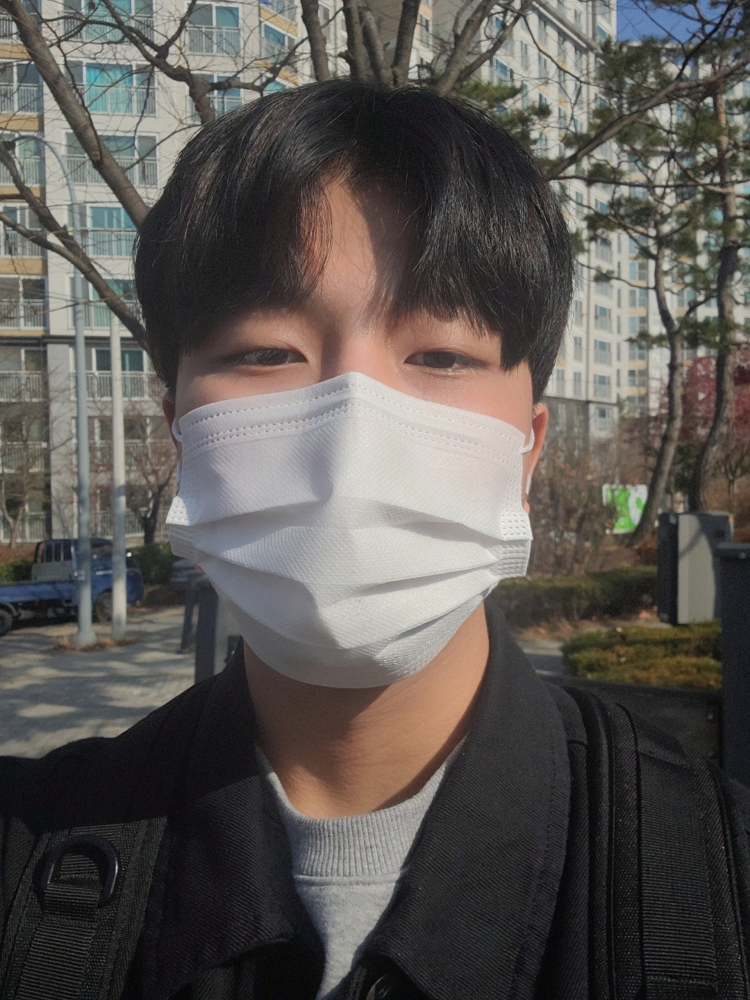
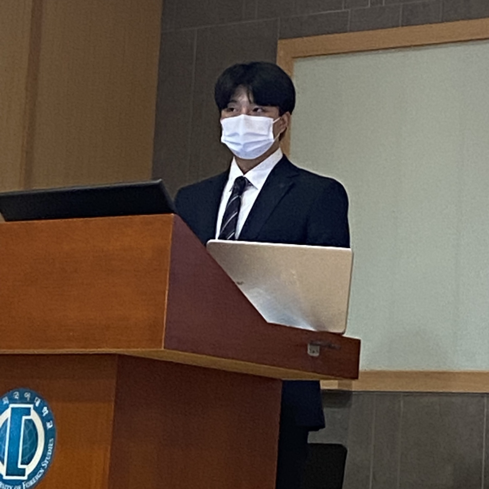
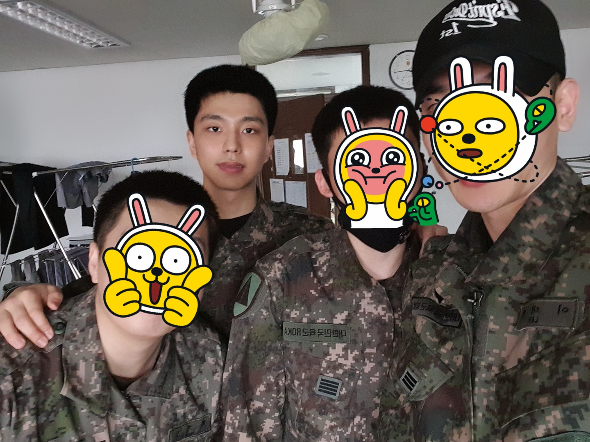

< 배경음악입니다 >
한글 : 김 지우
한자 : 金智優
영어 : Kim Ji Woo
왼쪽부터 현재, 학과 학생회장, 군복무 사진입니다.
   2016.02 인천 신송고등학교 졸업
2017.03 한국외국어대학교 글로벌캠퍼스 세르비아크로아티아어과 입학
2018.03 국제금융학과 이중전공
2018.09 ~ 2020.04 수도방위사령부 1경비단 병장 만기 전역
2021.07 교내 아이디어 공모전 "Better World" 우수상 입상
2022.03 블록체인 개발자의 꿈을 안고 웹프로그래밍 수강중
제 취미는 블로그 작성과 캠핑입니다.
블로그의 경우 아직 시작한 지 얼마 되지 않아 게시물이 적지만,
혼자 코딩 공부를 하며 느낀점들을 적고 있습니다.
블로그 링크
사실 블로그 이전부터 저의 오래된 취미 생활은 캠핑입니다.
글램핑, 백패킹, 데크캠핑 등등 가리지 않고 좋아합니다.
아직 혼자 캠핑을 가본 적은 없어서 혼자서 백패킹을 가보고 싶습니다.
또한, 전공 국가인 크로아티아와 한국의 캠핑 문화와 캠핑 용품들을 소개하는
인스타그램 계정을 운영했습니다. 현재는 운영하지 않고 있습니다.
인스타 링크
제 특기는 요리입니다.
어렸을 때부터 요리하는 것을 좋아했기 때문에 성인이 되고 나서도
친구들 대부분 홀 알바를 할 때 저는 주방 알바를 했습니다.
현재도 모현에 비어킹이라는 술집에서 주방 알바를 하고 있습니다
요리를 하는 것은 재밌고, 제가 해준 요리를 다른 사람이 맛있게 먹는 모습이 보기 좋습니다.
제가 좋아하는 요리 유튜버입니다.
취요남 링크
| 월 | 화 | 수 | 목 | 금 | |
|---|---|---|---|---|---|
| 1 | 웹프로그래밍 | 운영체제 | 캡스톤디자인 | ||
| 2 | |||||
| 3 | 고급세크어회화 | ||||
| 4 | 컴퓨터논리개론 | ||||
| 5 | 조교수직 | ||||
| 6 | |||||
| 7 | 알고리즘 | 동유럽문학세미나 | |||
| 8 | |||||
| 9 |